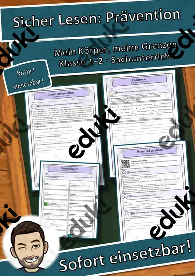
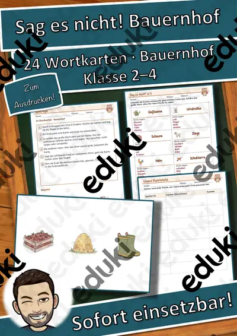

Lesespur: Stopp sagen und Hilfe holen: Grenzen erkennen – Lesespurgeschichte mit Rätseln (Klasse 1)
Stopp sagen und Hilfe holen – Grenzen erkennen – Lesespurgeschichte Ethik (Klasse 1/2)Begib dich mit deiner Klasse auf eine spannende Lesespur zum Thema Grenzen und Hilfe! Pia und Ole feiern Herbstfest auf dem Bauernhof: In der Strohburg sagt Pia laut Stopp, am Kürbisfeld nimmt Ole Hilfe an, im Hofladen helfen die beiden einem Mädchen, das seine Mama verloren hat, an der Ponykoppel sagt Ole Nein, in der Scheune basteln sie ein gutes Geheimnis, auf der Apfelwiese holen sie einen Erwachsenen, und im Bauerngarten entscheidet Pia selbst, wie sie begrüßt werden möchte. Am Lagerfeuer feiern alle zusammen. Der kleine Igel Hedi, der seine Stacheln zeigt, wenn ihm etwas zu viel ist, ist immer dabei. Am Ende jedes Abschnitts verrät ein Hinweis den nächsten Ort auf dem Hof-Plan – nur wer richtig liest, findet den Weg und sammelt alle geheimen Buchstaben zum Lösungswort.
Die perfekte Lesespur für den ETHIKUNTERRICHT der 1. und 2. Klasse: Sie verbindet motivierendes, sinnentnehmendes Lesen mit kindgerechten Gesprächsanlässen über Gefühle, Grenzen und Hilfe – präventiv und bewusst sanft, ohne Angst zu machen. Das Material ist SOFORT EINSETZBAR und in DREI DIFFERENZIERUNGSSTUFEN (leicht ★ / mittel ★★ / schwer ★★★) angelegt, mit sehr kurzen Sätzen.WICHTIG: Das komplette Material ist sowohl in FARBE als auch in SCHWARZ-WEISS enthalten – ideal zum Sparen von Druckkosten.DAS IST ENTHALTEN
- Lesespurgeschichte in 3 Niveaus (leicht, mittel, schwer)
- farbiger Hof-Plan als Suchkarte
- Hörverstehen mit QR-Code zur MP3 (selbstständiges Hören mit Kopfhörern)
- vier Aufträge auf dem Weg: ein Zuordnungs-Rätsel, ein Quiz, eine Rechenaufgabe im Zahlenraum bis 20 und ein Steckbrief
- Rätselseite (Wörter-Suchsel + Fragen)
- Ausmalbild zum Thema
- ausführliches Lösungsblatt für die Lehrkraft
- alles zusätzlich als komplette Schwarz-Weiß-VarianteSO FUNKTIONIERT DIE LESESPURDie Kinder lesen ab START, finden im Text den nächsten Ort, suchen ihn auf dem Plan und lesen bei dieser Station weiter. An jeder richtigen Station gibt es einen Buchstaben. Eingebaute Sackgassen (Misthaufen, Silo, Kaninchenstall, Wasserpumpe) sind keine Stationen und dienen der Selbstkontrolle. Am Ende werden die gesammelten Buchstaben umgestellt und ergeben ein geheimes Lösungswort. (Die Lösungen sind selbstverständlich nur im Lösungsblatt für die Lehrkraft enthalten.)INHALTLICHER SCHWERPUNKTDie Kinder spüren eigene Gefühle und Grenzen und zeigen sie mit einem klaren Stopp oder Nein. Sie lernen, das Stopp anderer sofort zu achten, unterscheiden gute Geheimnisse (Überraschungen) von Geheimnissen, die Bauchweh machen und erzählt werden dürfen, und wissen, bei wem sie Hilfe bekommen. Dabei erleben sie: Hilfe annehmen und Hilfe holen ist stark.ABGEDECKTER LEHRPLAN (Klasse 1/2, Ethik)
- Ethik (LehrplanPLUS Bayern) – Grundschule 1/2 „Ich und die anderen“: eigene Gefühle und Grenzen wahrnehmen und ausdrücken, die Grenzen anderer achten, gute und schlechte Geheimnisse unterscheiden und wissen, wo man Hilfe bekommt.
- Deutsch – Lesen mit Texten und Medien umgehen: sinnentnehmend lesen, einem Text gezielt Informationen entnehmen; Zuhören: einem Hörtext konzentriert folgen (Hörverstehen mit MP3).
- Mathematik – Rechnen im Zahlenraum bis 20.
- Fächerübergreifend / Kompetenzen: soziales Lernen, Prävention, Gesundheitserziehung, genaues Lesen und Prüfen, kreatives Gestalten (Ausmalbild).
Geeignet für Freiarbeit, Stationenlernen, Vertretungsstunden, Wochenplan, Projekttage und Homeschooling. Klassenstufe 1/2.
Ähnliche Materialien

Erste Hilfe für Kinder – Arbeitsheft mit Postern, Notruf & Wunden Kl. 2–4

Sicher Lesen Mein Körper, meine Grenzen – Sicherheitsthemen einfach lesen und verstehen (Grundschule, Klasse 1–2)

Soziales Lernen – Gefühle, Streit lösen, Klassenrat: Heft mit Postern und Karten Kl. 1–4

Basteln Lückentext mit Wortspeicher Hörverstehen und Suchsel

Grenze Lückentext mit Wortspeicher Hörverstehen und Suchsel

Wortspiele: Sag es nicht! Bauernhof – Klasse 2–4

Lesespur: Sich für andere einsetzen – Lesespurgeschichte mit Rätseln (Klasse 8)